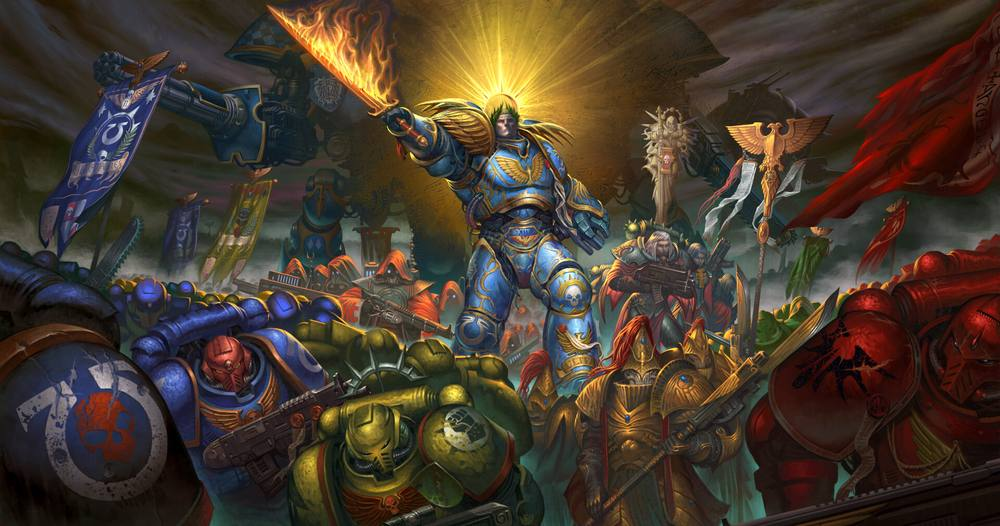

Indomitus Crusade
| Indomitus Crusade | |
|---|---|
| Part of the aftermath of the 13th Black Crusade and the opening of the Great Rift | |
 Roboute Guilliman at the head of the Indomitus Crusade, with the Adeptus Custodes, the Adepta Sororitas, the Titan Legions and the Chapters of the Adeptus Astartes | |
| Date | c. 000.M42 to the present[a] |
| Location | The Imperium Sanctus and, by way of the Nachmund Gauntlet, parts of the Imperium Nihilus |
| Result | First phase ended in Imperial victory at the Battle of Raukos in c. 012.M42; the Imperium Sanctus stabilised; operations continue |
| Belligerents | |
| Imperium of Mankind Adeptus Astartes (Primaris and Firstborn) Adeptus Custodes Sisters of Silence Adeptus Mechanicus Adepta Sororitas Astra Militarum Imperial Navy Grey Knights | Opponents Black Legion and the Heretic Astartes Death Guard Word Bearers Daemon legions of the Ruinous Powers Ork WAAAGH!s Tyranids Necrons Drukhari T'au Empire |
| Commanders and leaders | |
| Roboute Guilliman Belisarius Cawl Trajann Valoris Fleetmaster Cassandra VanLeskus Marneus Calgar Dante | Abaddon the Despoiler Mortarion Magnus the Red Haarken Worldclaimer Typhus Ka'Bandha |
| Strength | |
| Ten fleets of several hundred warships each, tens of thousands of Space Marines, uncounted regiments of the Astra Militarum | |
The Indomitus Crusade is the largest military effort of the Imperium of Mankind since the Great Crusade. It was called by the Lord Commander of the Imperium, Roboute Guilliman, on the Throneworld in the days after the Great Rift opened across the galaxy, and it was launched to defend and reclaim the worlds that the rising power of Chaos and the war of every xenos species threatened to overwhelm. The age in which it is fought is called the Era Indomitus.[1]
Unlike the Great Crusade, which sought to conquer a galaxy, the Indomitus Crusade was a war of rescue. It did not march as a single host but as ten fleets, each divided into self-sufficient battlegroups, with their own chronology, supply and astropathic network. It carried with it the Primaris Space Marines raised by Belisarius Cawl, and it placed these warriors in the ranks of the old Chapters and in many new ones. The crusade's first phase lasted about twelve years by the reckoning of the Lord Commander's own records and ended in the Battle of Raukos in c. 012.M42. Guilliman then dispersed the fleets and turned to the defence of his home realm of Ultramar in the Plague Wars. Operations in the name of the crusade have never ceased.[1][2]
Background
[edit]In 999.M41 the 13th Black Crusade of Abaddon the Despoiler broke the Cadian Gate and destroyed Cadia. The Warp storms that followed joined into the Cicatrix Maledictum, the Great Rift, a wound of tempest that divides the Imperium into two parts. On the Terran side lay the Imperium Sanctus; on the other, cut off from the light of the Astronomican, the Imperium Nihilus. For the first years after its opening the Imperium knew a darkness it called the Noctis Aeterna, in which fleets were lost, Navigators were blinded and astropaths died screaming in their choirs.[1]
Into this darkness came the Terran Crusade, a combined force of Space Marines, Battle Sisters, Guardsmen, Inquisitors and Mechanicus forces under Guilliman, who had been revived on Macragge by the Archmagos Cawl and the power of the aeldari god Ynnead. The crusade passed through the Maelstrom, fought its way across the Webway and reached the Moon at last, where it defeated Magnus the Red and the Thousand Sons in a battle that was the last before the gates of the Throneworld. Guilliman then spent a day in the throne room of the Emperor and came out of it determined to call the crusade.[1][3]
The Battle of Lion's Gate
[edit]The crusade's first action was not a plan of Guilliman's. As the Lord Commander began to take up his office, the Warp storm that had followed the Terran Crusade to the Sol System broke through the multi-spectrum shields of the Throneworld, and a Khornate daemon host, the Red Host, fell on the Imperial Palace at the Lion's Gate. Guilliman led the counter-attack himself. With the Adeptus Custodes under Captain-General Trajann Valoris, the Sisters of Silence and the Ultramarines companies that he had brought with him, he threw the Blood God's servants back into the Empyrean. The High Lords of Terra, who had until then believed the Palace the safest place in the galaxy, understood from this day that there was no refuge left in the Imperium. The action is sometimes called the Second Battle of Terra.[1]

Planning and muster
[edit]Guilliman did not at once take the field. Inquisitorial transcripts of his private vox in these days record him as struggling against the impulse to take what warriors he had and race to the nearest war. Instead he did what his brothers could not, and set out the war for the whole Imperium before he fought any part of it. He wrote to Mars, to Titan, to Jupiter and to the deep-space fortifications of the Sol System, and he ordered Cawl to hasten the raising of the Primaris Space Marines. He went in person to the Abbess Sanctorum of the Adepta Sororitas and the Fabricator-General of Mars; what he promised them, nobody knows, but he obtained their aid. He also treated with the Inquisition, the Custodes, the Adeptus Arbites, the Ecclesiarchy and the Officio Assassinorum to keep Terra quiet while the fleets gathered.[1]

The Primarch's Scourge
[edit]The muster was accompanied by a purge. The macro-hives of Terra were swept for cults and heretics, and hundreds of petty cults were destroyed. Millions of alleged mutants, heretics and recidivists were burned in the streets. The Terran nobility was not exempt: a number of corrupt officials, cult-magisters and high acolytes were removed from public life, and the Consul Pre-eminus of the Navigator Houses, Horron Sch'est, who tried to hold the muster to ransom for preferential treatment, was flogged in public. The Terran underhives called the purge the Primarch's Scourge. It cost lives and made many enemies, but it prevented sabotage during the muster.[1]
Triage
[edit]The crusade could only be assembled by taking forces from the worlds nearest to Sol, and this forced the Lord Commander into a cold assessment of the Segmentum Solar. Worlds that could hold out by themselves were left to fight. Worlds that were close to overrun and could never be saved without a large relief were ordered to withdraw their regiments and warships, with a rearguard left to cover the retreat. Thousands of Astra Militarum regiments and battered Navy ships fell back from fronts they had bled to defend. Some refused to leave, and Guilliman did not censure them. The Lord Commander's own record calls the decision a tragedy, but a necessary one.[1]
Organisation
[edit]Fleets, battlegroups and task forces
[edit]The crusade is divided into ten fleets, named in High Gothic: Primus, Secundus, Tertius and so on. Each is led by a fleetmaster and is a mixed force of Imperial branches in a balance set by Guilliman, with its own grand strategic purpose. Even the smallest fleet counts hundreds of warships and twice as many supply craft. Each fleet is divided into battlegroups, named Alphus, Betaris, Cerastus, and so on, each a self-sufficient formation with its own command ships and a groupmaster who answers to the fleetmaster and the Lord Commander. Battlegroups choose their own routes and fight their own campaigns within the fleet's general movement. A third level, the task force, is a temporary formation that a groupmaster assembles for a single task, such as the taking of a fortress, the carrying of a vital message or the destruction of a marked enemy, and then dissolves. In practice the most successful task forces stayed together for the length of the campaign and developed loyalties that outlast lives.[1]
Guilliman gave fleetmasters and groupmasters powers of requisition comparable to those of an Inquisitor Lord, because he knew that his organisation would not survive contact with the war. Some officers took only what they needed. Others took everything, and left the worlds they saved in a worse state than when they found them. Over time the battlegroups absorbed the manners of the worlds they had rescued: campaign badges, shared heraldry, tattoos and scarification became common in the ranks.[1]
Tempus Indomitus
[edit]The Warp is hostile to the flow of time. A single jump can leave a ship out of step with Terran time by days or years, and a ship in a storm may be thrown centuries in either direction. To prevent confusion, each fleet fixes its own calendar to the position of its command ship's chronometer. This is the Tempus Indomitus. A battlegroup that finds itself years apart from its flagship corrects its records by the fleet's reckoning and proceeds. The Ordo Chronos of the Inquisition, whose duty is to find and suppress temporal heresies, has not objected to the practice.[1]
Officio Logisticarum and the hub-fortresses
[edit]To feed, supply and record the fleets, Guilliman created a new branch of the Adeptus Terra, the Officio Logisticarum, known in the ranks as "Guilliman's Hand". It is millions strong, drawn from the Administratum and the Departmento Munitorum, and it works to a command structure laid down by the Lord Commander himself, bypassing the established bureaucracy. Under the Borachae Decree it may request military protection, assign tithed regiments to its own defence, and build fortress bases from which to supply, support and record the battlegroups.[1]
The first of these hub-fortresses was made of Ganymede, the moon of Jupiter that had been abandoned for ages by the Mechanicus and was found to be tainted by the Warp. It was cleansed in a secret operation by the Grey Knights, then bored out and fortified as Aquila Adamant, with great cogitators at its core and an astropathic fortress at each pole. Aquila Bellicos in the Gehenna System and Aquila Furians in the Hastos System followed. Beyond the muster systems, groupmasters were told to leave hub-fortresses behind them wherever they could, and many were improvised on worlds still burning: the fortress world of Formidicha, the agri-world of Mephistophores, the hive world of Olghyn II. Some choices were made badly, and in the Imori System Governor Lukaen Imori demanded that his own war-ruined capital be the hub-fortress instead of the better-fitted garrison world beside it. By their cogitators passed much of the fleets' traffic, and by their presence the stricken astropathic network of the Segmentum Solar was mended.[1]
The data-archives of the hub-fortresses are vast. Guilliman, who has no patience for the ignorance of earlier ages, demanded that every action, order and loss be recorded. The archives are now so large that only specialist data-savants can use them. The best-known extract is the Tablet of Conquests, a roll of honours kept by each fleet, on which are inscribed the deeds of heroes from every branch of the host.[1]
The Torchbearers
[edit]Early in the muster, Guilliman sent out small, fast task forces to find specific Space Marine Chapters and give them the means to raise Primaris Marines of their own, the "Primarch's Gift". These Torchbearer forces carried Sisters of Silence, Custodes of the Emissaries Imperatus and Primaris warriors of the right gene-line, as well as Magos Biologis with sealed canisters and strange machines. For Chapters that were failing, the task force's first duty was to find out whether the Chapter still existed. The Angels Revenant, whose homeworld Libethra had been cracked open by the Necrons of the Maynarkh Dynasty, were thought extinct until a Torchbearer force heard the sound of battle beneath the dead planet and found their last survivors fighting on. For Chapters expected to refuse, such as the Sons of Medusa, who had left the Iron Hands in schism, the force carried more Custodes: it was understood that to refuse a gift from the Emperor's own guard was a dangerous thing. The most distant Chapters, among them the Ultramarines, the Black Templars and the Raven Guard, received Torchbearers fitted for a long run through the Rift, with Silent Sisters to calm the Warp, Rogue Traders to find routes and Grey Knights to protect the mission.[1][4]
Flights of Crows and Fleet Septimus
[edit]The Rift made the work of the Black Ships harder, because their harvest of psykers for the Throne could no longer be conducted in orderly circuits. Many were redeployed as Flights of Crows that followed the battlegroups and gathered the psykers of newly relieved worlds, where the population was too frightened to resist the Silent Sisters. By this means the Golden Throne and the Astronomican were kept alight.[1]
One fleet differs from the rest. Fleet Septimus alone was ordered to muster far from the Sol System, at a place known only to the Lord Commander and its senior officers. Its size, its orders and its purpose are not recorded. Its personnel disappeared, and the only trace of it is a rumour of servo-skulls in onyx casing, carrying vermilion scrolls.[1]
The fleets in the field
[edit]Machorta Sound and the first departures
[edit]The first fleet to leave was Fleet Tertius, which left several days earlier than Guilliman had intended because a Khornate Crusade of Slaughter was detected falling on the Sol System. Its fleetmaster, Cassandra VanLeskus, obtained Guilliman's leave to attack at once and swore that the servants of Chaos would see a demonstration of Imperial vengeance. In the Battle of Machorta Sound, battlegroups Alphus, Betaris, Delphi, Haephestus and Lambdax drove into a Heretic invasion that spanned several systems and won. It was a proof of what the fleets could do. Fleet Tertius then turned toward the Segmentum Pacificus and the Segmentum Tempestus.[1]
Fleet Secundus, led by Battle Sisters of the Ebon Chalice and the Order of Our Martyred Lady, was sent toward the Eye of Terror in a deliberate thrust into the Segmentum Obscurus. The assignment was nicknamed the Road of Martyrs. Fleet Primus left third and carried the largest body of Primaris warriors and Greyshields, with Cawl himself aboard his mech-ark, the Zar-Quaesitor. It divided into several spearheads and broke up further as it went.[1]
Fleet Primus
[edit]Fleet Primus made only short jumps, because the Astronomican burned unsteadily. It drove back the daemon hordes at Gathalamor, in the Drogos System and on Tallarn. In the Lhorm Reaches it destroyed the Brass Tyrant. It freed the whole population of Ophelia VII from the Tyrant of Blueflame, although the greater daemon itself escaped. On Caster it met the Befouled Beast, which stood far above Guilliman, and the Lord Commander walked away unscathed. The rumour of the fleet's approach alone was enough to end a rebellion on Necromunda. On Catachan, where the Catachan regiments had already destroyed the Chaos cultists, the fleet halted to take on new regiments and left with more troops than it had when it left Terra.[1]
On many worlds the fleet found nothing to save. The hive world of Bhundar was past help, and the Lord Commander burned it clean so that the plague on it did not spread. The cardinal world of Gloriphia was destroyed, and the daemonic ritual on its ruins ended in rivers of ichor. In the Primagenesis System, the descent on Secundus Terra was a trap of the Alpha Legion, and the fleet suffered ambushes and fatal malfunctions. Guilliman broke off the attack and went round the system, rather than be bound in a war of attrition.[1]
On Rynn's World the arrival of the crusade broke the daemon legions of the Daemon Prince Rhaxor, and the Crimson Fists were given Primaris Marines who had been taken from the gene-line of their own primarch, Rogal Dorn, and who included warriors who had seen Dorn alive. Near Pyros, the warband called the Revenants of Umidia had seized a world that was an essential artery for the fleet's supply. Guilliman led the recapture personally, with Primaris Marines of the Ultramarines, Imperial Fists and Raven Guard, but a call for help from the Crimson Fists' Chapter Master Pedro Kantor forced him to end the siege at once. The assault cost more than expected, and Guilliman sent Captain Gauvian to Rynn's World at the first hour.[1]
Vorlese, Gathalamor and Baal
[edit]At Vorlese the enemy tried to prevent the crusade from leaving Terra at all. Using the shards of the shattered Cadian pylons, which they had gathered, the forces of Abaddon blocked the main Warp routes out of the Sol System and made Warp travel impossible. The attempt was defeated, and the fleets could spread.[1]
On Gathalamor the Word Bearers' Dark Apostles summoned daemons against the Mordian 84th Regiment and the Sisters of the Order of the Argent Shroud, who made a last stand in the ruins of the macro-cathedrum. As they prayed, a combined force of Custodians and Grey Knights, led by Trajann Valoris and Grand Master Aldrik Voldus, teleported into the Heretic lines. After three solar days the Chaos host was broken in the Battle for the Statue Steps.[1]
The relief of Baal, which Fleet Primus reached through the Nachmund Gauntlet, is described in the article on the Devastation of Baal. It brought the Blood Angels and their Successors into the crusade and led to the appointment of Dante as Regent of the Imperium Nihilus.
The War of Beasts, the multi-sided war for the Sentinel World of Vigilus at the end of the Nachmund Gauntlet, was won by the garrison and by relief forces under Marneus Calgar. See Imperium Nihilus.[1]
The Battle of Raukos
[edit]The first phase of the crusade ended at Raukos, a two-pronged action against the world of 108/Beta-Kalapus-9.2 and the Warp rift called the Pit of Raukos in Wilderness Space. The Word Bearers, the Iron Warriors and the Black Legion were using the rift as a base for attacks on neighbouring Imperial worlds. The loyalist forces, led by Guilliman, overran them. Raukos is accounted the victory that ended the first phase.[1]
Guilliman then held a triumph in imitation of the one the Emperor held after the Ullanor Crusade. At the ceremony stood twenty thousand Primaris Space Marines, forty thousand Firstborn, three convents of Battle Sisters, Skitarii legions, Titans, Imperial Knights, Custodes, Sisters of Silence and two million soldiers and voidsmen. Guilliman announced that the crusade would be dispersed through the Imperium and that he would now go to the aid of Ultramar, where the forces of Nurgle had invaded.[1]
The earlier Imperial reports recorded that the crusade lasted a full standard century and ended in the Plague Wars. The records of the Lord Commander, revised in 003.M42, place the Plague Wars in the first years of the crusade and give no end date. The revised chronology is the accepted one.[2]
Later operations
[edit]Arks of Omen
[edit]While Guilliman was in the Imperium Sanctus, the Warmaster of the Imperium Nihilus, Abaddon, launched a campaign in the dark half of the galaxy to recover the pieces of a mysterious Key, with the aid of the daemon Vashtorr. The crusade's Fleet Quartus, which had gone on its own course into the Imperium Nihilus, was lost at Malakbael, when the destruction of a psychic beacon released a murder-curse that turned its personnel into berserkers. The fleet is now listed as Excommunicate Traitoris. The campaign ended with the return of the primarch Lion El'Jonson. See Arks of Omen.

Leviathan and the Fourth Tyrannic War
[edit]The defeat at Baal ended the Third Tyrannic War, but not Hive Fleet Leviathan. The Hive Mind, having failed against Baal, turned its strength against the remote reaches of the Segmentum Pacificus, where the Imperium's attention was elsewhere. Its three tendrils, Grendyllus, Nautilon and Promethor, began the Fourth Tyrannic War, which fell on the western fringe. See Tyranids.[2]
The Nephilim War
[edit]In the Nephilim Sector a Necron array of blackstone pylons has made a dead zone in the Warp. Battlegroup Kallides, the first force sent to examine it, was driven back. Battlegroup Hephaestus, of Fleet Tertius, under the command of Belisarius Cawl, went in after it. The war there is the subject of the article on the Pariah Nexus.
Armageddon
[edit]The most recent dispatches from the Segmentum Solar record a new war on Armageddon, where the Ork warlord Ghazghkull Thraka has again attacked the planet and where the Commissar Sebastian Yarrick, long reported dead, is said to be alive. A coalition of Space Marines, with the Blood Angels in the lead, has answered his appeal. A desperate plan named Operation Imperator is reported. The Imperial Calendar has not yet recorded the outcome.[2]
Reception and legacy
[edit]The crusade has been disliked by some of the same people it has saved. A number of High Lords of Terra, whose power was reduced when Guilliman took the regency and replaced five of their number, have suggested that the Lord Commander planned a "great crusade" of his own all along, and that he took the road to Terra to give it legitimacy. They base this on Ecclesiarchal apocrypha and on the Emperor's own example. Others hold that the crusade was the Emperor's will, because Guilliman did not begin it until he had left the throne room. In the Imperial Cult the Lord Commander is increasingly venerated as a living saint, against his own wishes, and the Ministorum has made of the crusade a pilgrim's road.[1][5]
The crusade's first phase restored the Astronomican's light across the Imperium Sanctus, repaired the astropathic network in part, and gave the Imperium a century of survival. It also created the Primaris Chapters and made the Primaris Marine the standard of the Adeptus Astartes. Slightly fewer than half of the thousand Chapters of the Adeptus Astartes were unaccounted for at the end of the first phase, and at least twelve Chapter homeworlds had been destroyed. It was, nonetheless, the hope that the crusade gave to isolated worlds, more than any single victory, that kept them fighting.[1]
Timeline
[edit]| Date | Event | Theatre |
|---|---|---|
| 999.M41 | The 13th Black Crusade destroys Cadia and the Great Rift divides the Imperium | Cadian Gate |
| c. 999.M41[b] | Guilliman is revived on Macragge and the Terran Crusade passes through the Maelstrom and the Webway to the Moon, where Magnus the Red is defeated | Luna |
| c. 000.M42[c] | The Red Host falls on the Imperial Palace at the Lion's Gate; Guilliman leads the counter-attack, called the Second Battle of Terra | Terra |
| c. 000.M42[d] | The Primarch's Scourge purges the macro-hives of Terra during the muster of the fleets | Terra |
| c. 000.M42[e] | Fleet Tertius leaves early and wins the Battle of Machorta Sound against a Heretic invasion | Machorta Sound |
| c. 000–012.M42[f] | The Plague Wars are fought in Ultramar against the forces of Nurgle | Realm of Ultramar |
| c. 000–001.M42[g] | Abaddon's forces blockade the Warp routes out of the Sol System at Vorlese; Fleet Primus drives daemon hordes from Gathalamor | Sol System |
| c. 001.M42[h] | Fleet Quartus is lost at Malakbael to the Murder-Curse during the Arks of Omen campaign | Malakbael |
| c. 000–012.M42[i] | Three tendrils of Hive Fleet Leviathan begin the Fourth Tyrannic War on the western fringe | Segmentum Pacificus |
| Early M42[j] | Battlegroup Hephaestus under Cawl enters the Nephilim War in the Nephilim Sector | Nephilim Sector |
| c. 012.M42 | The Battle of Raukos ends the first phase; Guilliman holds a triumph and disperses the fleets | Raukos |
| M42 (latest dispatches)[k] | A new war on Armageddon against Ghazghkull Thraka, with the Blood Angels answering the appeal of Sebastian Yarrick | Armageddon |
See also
[edit]Notes
[edit]- ^ The Indomitus fleets each keep a private chronology, the Tempus Indomitus, so that dates from different battlegroups seldom agree. The figures given here are Terran sidereal years as reckoned by the Officio Logisticarum.
- ^ Estimated; the sources place the Terran Crusade in the days after the Great Rift opened but give no exact year.
- ^ Estimated; the sources date the crusade's launch only to the Era Indomitus.
- ^ Estimated; the sources date the crusade's launch only to the Era Indomitus.
- ^ Estimated; the sources date the crusade's launch only to the Era Indomitus.
- ^ Estimated; the Plague Wars are placed in the first years of the crusade, with no end date recorded.
- ^ Estimated; the sources give no exact date for the Fleet Primus campaign.
- ^ Estimated; the Arks of Omen campaign is given only as the early Era Indomitus.
- ^ Estimated; the sources give no exact date for the start of the Fourth Tyrannic War.
- ^ Estimated from the order of events in the sources; no record gives an exact year.
- ^ The Imperial Calendar had not recorded the outcome at the latest dispatch.
References
[edit]- ^ a b c d e f g h i j k l m n o p q r s t u v w x y z { | } Records of the Indomitus Crusade (ongoing). Office of the Lord Commander.
- ^ a b c d Lexicanum Martialis. Officio Militaris.
- ^ Cawl, Belisarius (c. 999.M41). Notes on the Ultima Founding. Mars.
- ^ Codex Imperialis (rev. 980.M41). Adeptus Terra.
- ^ Liber Ecclesiasticus (M37). Adeptus Ministorum.